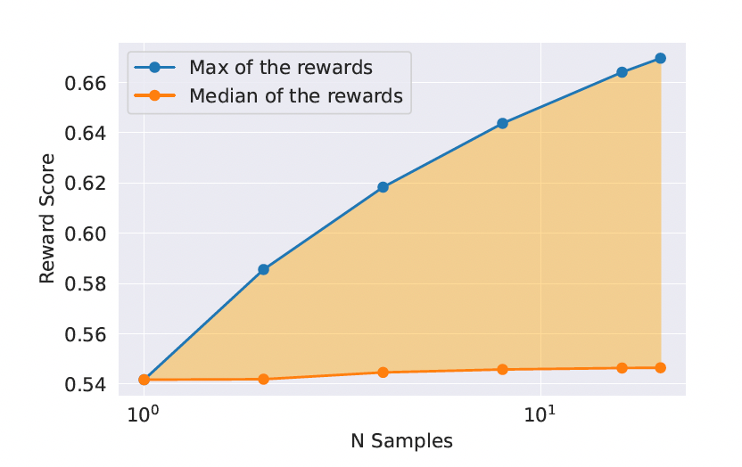

Llama 2#
Note
Llama 2 is a collection of pretrained and fine-tuned LLMs ranging from 7b to 70b parameters. The fine-tuned LLMs, called Llama2-chat, are optimized for dialogue use cases.
Introduction#
The capabilities of LLMs are remarkable considering the seemingly straightforward nature of the training methodology. Auto-regressive transformers are pretrained on an extensive corpus of self-supervised data, followed by alignment with human preferences via techniques such as Reinforcement Learning with Human Feedback (RLHF).
We are releasing the following models to the general public for research and commercial use:
Llama 2, an updated version of Llama 1, trained on a new mix of publicly available data. We also increased the size of the pretraining corpus by 40%, doubled the context length of the model, and adopted grouped-query attention.
Llama 2-Chat, a fine-tuned version of Llama 2 that is optimized for dialogue use cases.
Pretraining#
Pretraining Data#
We trained on 2 trillion tokens of data as this provides a good performance–cost trade-off.
Training Details#
We adopt most of the pretraining setting and model architecture from Llama 1. We use the standard transformer architecture, apply pre-normalization using RMSNorm, use the SwiGLU activation function, and rotary positional embeddings. The primary architectural differences from Llama 1 include increased context length and grouped-query attention (GQA).
Llama 2 Pretrained Model Evaluation#
We evaluate pretrained models on standard academic benchmarks, the benchmarks are grouped into the categories listed below:
Code: We report the average pass@1 scores of our models on HumanEval and MBPP.
Commensense reasoning.
World knowledge.
Reading comprehension.
Math: We report the average of the GSM8K(8 shot) and MATH (4 shot) benchmarks at top 1.
Popular aggregated benchmarks.
Fine-Tuning#
Llama 2-Chat is the result of several months of research and iterative applications of alignment techniques, including both instruction tuning and RLHF, requiring significant computational and annotation resources.
Supervised Fine-Tuning (SFT)#
Getting Started. To bootstrap, we started the SFT stage with publicly available instruction tuning data.
Quality Is All You Need. A limited set of clean instruction-tuning data can be sufficient to reach a high level of quality. We found that SFT annotations in the order of tens of thousands was enough to achieve a high-quality result. We stopped annotating SFT after collecting a total of 27,540 annotations.
We also observed that different annotation platforms and vendors can result in markedly different downstream model performance, highlighting the importance of data checks even when using vendors to source annotations. To validate our data quality, we carefully examined a set of 180 examples, comparing the annotations provided by humans with the samples generated by the model through manual scrutiny. Surprisingly, we found that the outputs sampled from the resulting SFT model were often competitive with SFT data handwritten by human annotators, suggesting that we could reprioritize and devote more annotation effort to preference-based annotation for RLHF.
Fine-Tuning Details. For supervised fine-tuning, we use a cosine learning rate schedule with an initial learning rate of 2 × 10−5, a weight decay of 0.1, a batch size of 64, and a sequence length of 4096 tokens.
For the fine-tuning process, each sample consists of a prompt and an answer. To ensure the model sequence length is properly filled, we concatenate all the prompts and answers from the training set. A special token is utilized to separate the prompt and answer segments. We utilize an autoregressive objective and zero-out the loss on tokens from the user prompt, so as a result, we backpropagate only on answer tokens. Finally, we fine-tune the model for 2 epochs.
Reinforcement Learning with Human Feedback (RLHF)#
RLHF is a model training procedure that is applied to a fined-tuned language model to further align model behavior with human preferences and instructions following. We collect data that represents empirically sampled human preferences, whereby human annotators select which of two model outputs they prefer. This human feedback is subsequently used to train a reward model, which learns patterns in the preferences of the human annotators and can then automate preference decisions.
Human Preference Data Collection#
We ask annotators to first write a prompt, then choose between two sampled model responses, based on provided criteria. we also ask annotators to label the degree to which they prefer their chosen response over the alternative: either their choice is significantly better, better, slightly better, or negligibly better/ unsure.
For our collection of preference annotations, we focus on helpfulness and safety.
Human annotations were collected in batches on a weekly basis. As we collected more preference data, our reward models improved, and we were able to train progressively better versions for Llama 2-Chat. It is important before a new Llama 2-Chat tuning iteration to gather new preference data using the latest Llama 2-Chat iterations. This step helps keep the reward model on-distribution and maintain an accurate reward for the latest model.
Reward Modeling#
The reward model takes a model response and its corresponding prompt (including contexts from previous turns) as inputs and outputs a scalar score to indicate the quality of the model generation. Leveraging such response scores as rewards, we can optimize Llama 2-Chat during RLHF for better human preference alignment and improved helpfulness and safety.
We train two separate reward models, one optimized for helpfulness (referred to as Helpfulness RM) and another for safety.
We initialize our reward models from pretrained chat model checkpoints, as it ensures that both models benefit from knowledge acquired in pretraining. The model architecture and hyper-parameters are identical to those of the pretrained language models, except that the classification head for next-token prediction is replaced with a regression head for outputting a scalar reward.
Training Objectives. To train the reward model, we use the collected pairwise human preference data and a binary ranking loss:
where \(r_{\theta}(x, y)\) is a scalar score output for prompt \(x\) and completion \(y\) with model weight \(\theta\). \(y_{c}\) is the preferred response and \(y_{r}\) is the rejected counterpart.
Built on top of this binary ranking loss, given that our preference ratings is decomposed as a scale of four points (e.g., significantly better), it can be useful to leverage this information to explicitly teach the reward model to assign more discrepant scores to the generations that have more differences. To do so, we further add a margin component in the loss:
where the margin \(m(r)\) is a discrete function of the preference rating.
Data Composition. We combine our newly collected data with existing open-source preference datasets to form a larger training dataset. Initially, open-source datasets were used to bootstrap our reward models while we were in the process of collecting preference annotation data.
Training Details. We train for one epoch over the training data.
Reward Model Results. As expected, our own reward models perform the best on our internal test sets collected based on Llama 2-Chat, with the Helpfulness reward model performing best on the Meta Helpfulness test set, and similarly the Safety reward model performing best on the Meta Safety test set.
Scaling Trends. As expected, More data and a larger-size model generally improve accuracy. More importantly, the scaling performance has not yet plateaued given the existing volume of data annotation used for training, a signal that there is room for more improvement with more annotations. We note that reward model accuracy is one of the most important proxies for the final performance of Llama 2-Chat. While best practices for comprehensively evaluating a generative model is an open research question, the ranking task of the reward has no ambiguity. Therefore, everything else being equal, an improvement of the reward model can be directly translated into an improvement for Llama 2-Chat.
Iterative Fine-Tuning#
As we received more batches of human preference data annotation, we were able to train better reward models and collect more prompts. We therefore trained successive versions for RLHF models, referred to here as RLHF-V1, … , RLHF-V5.
We explored RLHF fine-tuning with two main algorithms:
Rejection Sampling fine-tuning. At each iterative stage, we sample K answers for each prompt from the most recent model. We score each sample given the best reward model accessible at the time of the experiment, and then select the best answer for a given prompt.
In earlier versions of our model, up to RLHF V3, our approach was to confine answer selection solely to the “bag” of samples gathered from the preceding iteration. For example, RLHF V3 was trained using only samples from RLHF V2. However, this method led to a regression in some capabilities. In response, on subsequent iterations, we modified our strategy, incorporating top-performing samples from all prior iterations, such as those used in RLHF-V1 and RLHF-V2.
We illustrate the benefit of Rejection Sampling in Figure 7. The delta between the maximum and median curves can be interpreted as the potential gain of fine-tuning on the best output.

We can observe that the optimal temperature is not constant during the iterative model updates: RLHF has a direct impact on rescaling the temperature.
We perform rejection sampling only with our largest 70B Llama 2-Chat. All smaller models are fine-tuned on rejection sampled data from the larger model, thus distilling the large-model capabilities into the smaller ones.
PPO. We further train our language model following the RL scheme which uses the reward model as an estimate for the true reward function (human preference) and the pretrained language model as the policy to optimize. During this phase, we seek to optimize the following objective:
We iteratively improve the policy by sampling prompts \(p\) from our dataset \(\mathcal{D}\) and generations \(g\) from the policy \(\pi\) and use the PPO algorithm and loss function to achieve this objective.
The final reward function we use during optimization:
contains a penalty term for diverging from the original policy \(\pi_{0}\). We find this constraint is useful for training stability, and to reduce reward hacking wherebywewould achieve high scores from the reward model but lowscores from human evaluation.
We define \(R_{c}\) to be a piecewise combination of the safety \((R_{s})\) and helpfulness \((R_h)\) reward models. We also find it important to whiten the final linear scores (shown here by reversing the sigmoid with the logit function):
System Message for Multi-Turn Consistency#
In a dialogue setup, some instructions should apply for all the conversation turns, e.g., to respond succinctly, or to “act as” some public figure. When we provided such instructions to Llama 2-Chat, the subsequent response should always respect the constraint. However, our initial RLHF models tended to forget the initial instruction after a few turns of dialogue. To address these limitations, we propose Ghost Attention (GAtt).
GAtt Method. Assume we have access to a multi-turn dialogue dataset between two persons (e.g., a user and an assistant), with a list of messages \([u_1, a_1, u_2, a_2, \dots , u_n, a_n]\), where \(u_{n}\) and \(a_{n}\) correspond to the user and assistant messages for turn \(n\), respectively. Then, we define an instruction, \(inst\), that should be respected throughout the dialogue. For example, \(inst\) could be “act as.”
Next, we can sample from this synthetic data \([inst + u_{1},a_{1}, inst + u_{2},a_{2},\dots, inst + u_{n}, a_{n}]\) using the latest RLHF model. We now have a context-dialogue and the sample with which to fine-tune a model. Instead of augmenting all context-dialogue turns with the instruction, we can drop it in all but the first turn, generate \([inst + u_{1},a_{1}, u_{2},a_{2},\dots, u_{n}, a_{n}]\) but this would lead to a mismatch at training time between the system message. To fix this issue, which could hurt the training, we simply set the loss to 0 for all the tokens from the previous turns, including assistant messages.
We applied GAtt after RLHF V3.